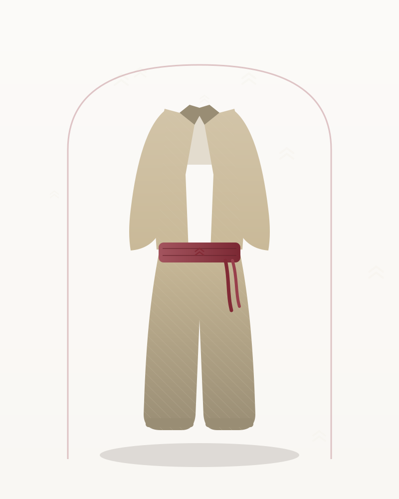

Colemêrg · Şal û Şepik
Colemêrg Yöresi Şal û Şepik Takımı – Krem Yün Dokuma
3.450 TL
Ön sipariş tahmini fiyatıdır · KDV dahil
Colemêrg yöresinden krem şal û şepik takımı; açık tonlu yün dokuma kumaş, bordo şûtik kuşakla dengelenir. Yazlık düğün ve nişanlar için hafif bir seçimdir.
💡 Henüz satış yapılmıyor. Talep bıraktığınızda bu model, satış başladığında öncelikli olarak üretilecek ve size özel erken erişim tanınacak.
| Kategori | Şal û Şepik |
|---|---|
| Yöre | Colemêrg |
| Kumaş | Yün Dokuma |
| Renk | Krem |
| Durum | Ön sipariş (talep toplama aşamasında) |
| Ürün Kodu | KY-SCKY-34 |